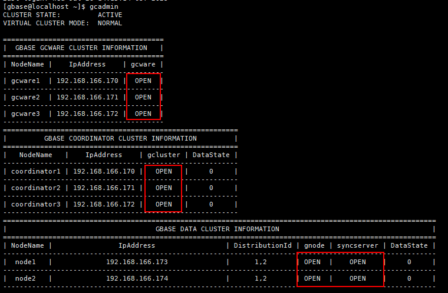

Checking the GBase Service Status
Procedure
- Log in to the host node where the client of the COORDINATOR type is installed.
- Run the following command to log in as user GBase:
su - gbase
- In the GBase user view, run the gcadmin command to check the GBase running status. If the status of all nodes is OPEN, the GBase service is started properly, as shown in the following figure. If the GBase service is not started properly, run the gcluster_services command and try again.

Copyright © Huawei Technologies Co., Ltd.